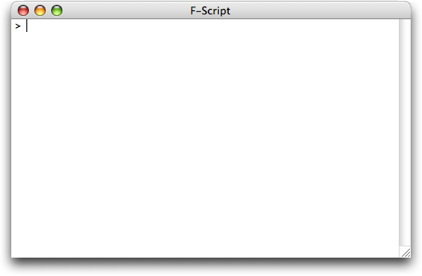
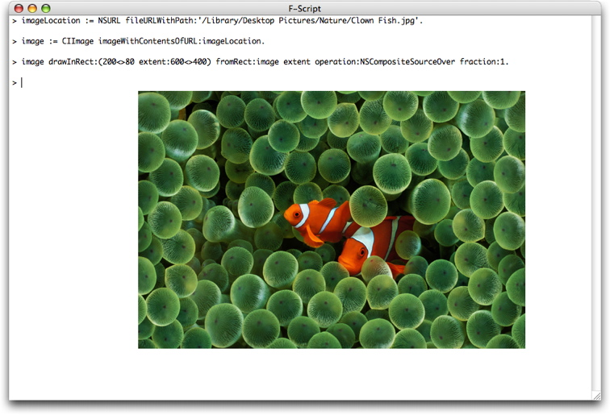

Revised January 2010
F-Script is an open-source scripting layer dedicated to Cocoa. If you aren't using it yet, this is your chance to learn how it can improve your productivity as well as those of the users of your own Cocoa applications. In this article, our goal will be to produce a nice little animation using fancy Core Image effects. In doing so, we will learn the basics of F-Script. So install yourself comfortably in front of your Mac, download the latest F-Script version from http://www.fscript.org and enjoy the trip!
Note: this article is an extended version of Learn F-Script in 20 Minutes, originally published in the May 2007 issue of MacTech Magazine.
We are going to learn F-Script by taking advantage of one of its key functionalities: the ability to be used interactively. With its console, you can interactively type commands in order to manipulate Objective-C objects on the fly. The F-Script console opens automatically when you launch F-Script.app. Inside it, you can type F-Script expressions or scripts and have them immediately executed when you press Return.
Figure 1. The F-Script console, waiting for your input
F-Script is a Smalltalk dialect for Cocoa and should look very familiar to you if you already know Objective-C. Indeed, Brad Cox, who created Objective-C, describes his language as "a hybrid language that contains all of C language plus major parts of Smalltalk". Here is an example of a message sending expression, both in Objective-C and F-Script. In this example, we ask for the current date using the NSDate class provided by Cocoa.
| Objective-C | F-Script (i.e., Smalltalk) |
|---|---|
[NSDate date] | NSDate date |
The expression is similar, except for the fact that, in F-Script, you don't have to put brackets around your message. This is because F-Script is a very simple language and sending messages is nearly the only thing you can do. Therefore, there is no need to have a special syntax to delimit messages. Now, if you type this expression in the console and hit Return, it will be immediately evaluated and the result will be displayed (obviously, the result you'll get will differ from the one shown below):
> NSDate date
2009-01-16 14:08:23 +0100
As you can see, F-Script provides an interactive environment with which you can directly interact with your objects, instead of having to develop a specific application each time you want to do something. F-Script provides numerous tools to assist you during such interactive Cocoa sessions. In this first session, you are likely to find the following tips useful:
Before continuing to talk about the language itself, let me give you a little bit of the history: Smalltalk was created in the early seventies at the famous Xerox Palo Alto Research Center, the PARC, by a team led by Alan Kay. As you might know, since then, Smalltalk has been having a big influence on the software industry. For instance, you might have heard about a visit that Steve Jobs made at the PARC in 1979. A visit that had a considerable influence on the design of the Lisa and the Macintosh computers. What Steve Jobs was shown there was Smalltalk. It had a graphical interface, was the first object-oriented system, and supported networking. "You guys are sitting on a gold mine here. Why aren't you making this a product?" asked the young Steve Jobs. A short time later, several people from the PARC were working at Apple and the rest is history...
So, what is the basic concept of Smalltalk? The key insight leading to the design of Smalltalk is that we can describe everything in terms of objects. As Alan Kay puts it: "Smalltalk's design is due to the insight that everything we can describe can be represented by the recursive composition of a single kind of behavioral building block that hides its combination of state and process inside itself and can be dealt with only through the exchange of messages". Indeed, in Smalltalk, everything is an object, even numbers and booleans.
In a F-Script program the main control structure is message sending. In F-Script, as well as in Objective-C, a message with no argument is called a unary message. A message with one or more colons in its selector is called a keyword message. And, unlike Objective-C, there is a third kind of message in F-Script: a message that is composed of non-alphabetical characters like +, -, etc., is called a binary message. A binary message always has only one argument.
| Objective-C | F-Script | |
|---|---|---|
| Unary Message | [NSDate date] | NSDate date |
| Keyword Message | [NSDate dateWithTimeIntervalSinceNow:10] | NSDate dateWithTimeIntervalSinceNow:10 |
| Binary Message | Not available | date1 < date2 |
The Objective-C equivalent to date1 < date2 would be [date1 compare:date2] == NSOrderedDescending.
As in Objective-C, messages can be chained together. Expressions are evaluated from left to right, giving us the same semantics, as shown below.
| Objective-C | F-Script |
|---|---|
[[NSDate date] description] | NSDate date description |
But sometimes, we need a way to determine the order of evaluation of messages. F-Script introduces a precedence rule (the only precedence rule in the language): unary messages are evaluated first, then binary messages, and then keyword messages. If you want to change the order of evaluation, you can use parentheses to delimit a message.
The following example shows a few other differences between F-Script and Objective-C:
| Objective-C | F-Script |
|---|---|
NSDate *date1 = [NSDate date]; | date1 := NSDate date. |
Everything is an object in F-Script and variable need not be explicitly typed. The assignment syntax uses := instead of just = in Objective-C, and the instruction separator is not the semicolon, but the period symbol. The following table shows other differences. As you can see, strings are enclosed in single quotes, and comments are enclosed in double quotes.
| Objective-C | F-Script |
|---|---|
@"a string" | 'a string' |
/* a comment */ | "a comment" |
@selector(dateWithTimeIntervalSinceNow:) | #dateWithTimeIntervalSinceNow: |
NSMakePoint(200, 80) | 200<>80 |
Finally, F-Script provides handy notations for specifying Cocoa arrays and dictionaries:
| Objective-C | F-Script |
|---|---|
[NSMutableArray arrayWithObjects:@"Hi", @"mom", nil] | {'Hi', 'mom'} |
| #{'one'->1, 'two'->2} |
We now know enough of F-Script to begin with our Core Image program. We will first create an NSURL object referring to the image we want to display. In this example, we will use an image that is stored on disk in the desktop picture folder. You can type the code below in the F-Script console to have it executed immediately.
imageLocation := NSURL fileURLWithPath:'/Library/Desktop Pictures/Nature/Clown Fish.jpg'.
The imageLocation variable now points to our NSURL object. We will now create a CIImage object, initialized with our image on-disk.
image := CIImage imageWithContentsOfURL:imageLocation.
Note that we are using standard methods provided by the Mac OS X frameworks. Now that we have a CIImage object, we can ask it to draw itself on screen, again using a standard method.
image drawInRect:(200<>80 extent:600<>400) fromRect:image extent operation:NSCompositeSourceOver fraction:1.
After executing this code, we should see a beautiful little image displayed in the console, as shown below.
Figure 2. Loading and displaying an image using Core Image and F-Script
The first argument passed to the drawing method is the rectangle we want to draw in, which is denoted with 200<>80 extent:600<>400.
This expression actually creates an NSValue object representing a
rectangle with an origin at (200, 80), a width of 600 and a height of
400. When passed to the method, the NSValue is automatically mapped by
F-Script to an NSRect structure. This kind of automatic mapping between
objects and primitives Objective-C types makes it possible to use the
Mac OS X Objective-C based frameworks from a pure object language such
as F-Script. You can change the rectangle size to make the image bigger
or smaller and immediately see the result on-screen.
The second argument is a rectangle specifying, in the image's own
coordinate system, the portion of image we want to draw. In our example,
we want to draw the whole image. Consequently, we must pass a rectangle
that specify the extent of the image. This data is easily accessible:
the CCImage class implements an extent method that returns
such a rectangle. Since we will also make use of this data when
configuring our image-processing filters in the next sections, let's
look at it directly:
> image extent
(0<>0 extent:2560<>1600)
As we can see, our image has a width of 2560 and a height of 1600. In this tutorial, we draw it in a smaller rectangle of width 600 and height 400 to make it easily viewable. The drawing method takes care of scaling the image to fit our destination rectangle.
The drawing method draws the image in the current graphic context, which, in our example, happens to be the F-Script console. It is possible, of course, to draw elsewhere, using standard Mac OS X techniques. For example, the folowing code creates a window and draws our image inside, using standard methods provided by the NSWindow and NSView classes.
window := NSWindow alloc initWithContentRect:(200<>200 extent:600<>400)
styleMask:NSTitledWindowMask + NSClosableWindowMask
backing:NSBackingStoreBuffered
defer:NO.
window orderFront:nil.
window contentView lockFocus.
image drawInRect:(0<>0 extent:600<>400) fromRect:image extent operation:NSCompositeSourceOver fraction:1.
window contentView unlockFocus.
window flushWindow.
Figure 3. Our image in a new window
Core Image filters allow us to do all kind of highly optimized image processing. Mac OS X comes bundled with dozens of filters. Going forward with our exploration, we will apply a filter known as CIBumpDistortion, which creates a bump in the image. You are encouraged to try other filters as well. F-Script's interactivity makes it fun and efficient to explore such Mac OS X capabilities. The following F-Script code creates a CIBumpDistortion filter object and configures it to process our image, creating a bump of radius 900 and of scale 0.8.
bumpFilter := CIFilter filterWithName:'CIBumpDistortion'.
vector := CIVector vectorWithX:1200 Y:800.
bumpFilter setValue:vector forKey:'inputCenter'.
bumpFilter setValue:900 forKey:'inputRadius'.
bumpFilter setValue:0.8 forKey:'inputScale'.
bumpFilter setValue:image forKey:'inputImage'.
Now that the filter is configured, it will apply itself to our image when asked to provides its output, creating a new CIImage object and giving it back to us:
bumpedImage := bumpFilter valueForKey:'outputImage'.
At this point, it is important to note that no rendering has happened yet. Indeed, "bumpedImage", our new CIImage object, just stores instructions about how to render our image (something like: "apply a bump centered at (1200,800) with a radius of 900 and a scale of 0.8"). The actual rendering (i.e., the production of the new image) will only happen when needed (e.g. when the image is drawn on screen). This lazy rendering model make it possible for Core Image to apply aggressive optimization strategies to the rendering process, in particular when multiple filters are combined. For now, let's just ask our new image to draw itself on screen:
bumpedImage drawInRect:(200<>80 extent:600<>400) fromRect:bumpedImage extent operation:NSCompositeSourceOver fraction:1.
Figure 4. Our image after processing by a CIBumpDistortion filter
To understand how the filter works, it is interesting to change its configuration (for instance, the values of its radius and its scale) and to regenerate and redisplay the image. If you are sitting behind an F-Script console, you are encouraged to do so!
Core Image provides lots of filters. Each one has a specific set of parameters, that are configured using the setValue:forKey:
method, as we've just seen (this is not an F-Script specific technique;
it's just the way the Core Image API works). To illustrate this, here
is the F-Script code to change the hue using Core Image.
hueFilter := CIFilter filterWithName:'CIHueAdjust'.
hueFilter setValue:2.5 forKey:'inputAngle'.
hueFilter setValue:image forKey:'inputImage'.
hueImage := hueFilter valueForKey:'outputImage'.
hueImage drawInRect:(200<>80 extent:600<>400) fromRect:image extent operation:NSCompositeSourceOver fraction:1.
Figure 5. Our image after processing by a CIHueAdjust filter
In the folowing example, we try yet another filter. This time, we'll apply a gaussian blur effect on our image.
blurFilter := CIFilter filterWithName:'CIGaussianBlur'.
blurFilter setValue:15 forKey:'inputRadius'.
blurFilter setValue:image forKey:'inputImage'.
bluredImage := blurFilter valueForKey:'outputImage'.
bluredImage drawInRect:(200<>80 extent:600<>400) fromRect:image extent operation:NSCompositeSourceOver fraction:1.
Figure 6. Our image after processing by a CIGaussianBlur filter
Finaly, here is a more complex filter that applies a perspective transformation.
perspectiveFilter := CIFilter filterWithName:'CIPerspectiveTransform'.
perspectiveFilter setValue:(CIVector vectorWithX:500 Y:1000) forKey:'inputTopLeft'.
perspectiveFilter setValue:(CIVector vectorWithX:2000 Y:1000) forKey:'inputTopRight'.
perspectiveFilter setValue:(CIVector vectorWithX:2560 Y:0) forKey:'inputBottomRight'.
perspectiveFilter setValue:(CIVector vectorWithX:0 Y:0) forKey:'inputBottomLeft'.
perspectiveFilter setValue:image forKey:'inputImage'.
perspectiveImage := perspectiveFilter valueForKey:'outputImage'.
perspectiveImage drawInRect:(200<>80 extent:600<>400) fromRect:image extent operation:NSCompositeSourceOver fraction:1.
Figure 7. Our image after processing by a CIPerspectiveTransform filter
Now that we know how to process and display an image, we can create a nice little animation by repeatedly processing the image with a varying filter and displaying the result. To do that we just need to learn how write a loop using F-Script.
But, wait a minute... Isn't F-Script supposed to have a very simple syntax, where everything is expressed by sending messages to objects? Well, this is exact and, in fact, F-Script does not have any special syntax for control structures such as loops or conditionals. So the question here is "How can we express useful programs without such syntax?" To answer that, let me introduce you to the concept of code blocks in F-Script. Below, we see a code block in Objective-C and one in F-Script. Note the use of brackets in F-Script, instead of curly braces.
| Objective-C | F-Script |
|---|---|
{ |
[
|
The code blocks look similar, but the way they work is quite different. In Objective-C, when the computer executes the code block, it simply executes the instructions in it immediately. In F-Script, the code block is actually a kind of literal notation for an object that contains the instructions. In other words, a block represents a deferred sequence of actions. In F-Script, the presence of a code block does not lead to the execution of its content, but to the creation of a block object, that can then be asked to execute the instructions. To do that, we send the "value" message to the block. The result returned by the execution of a block is the result of the evaluation of its last instruction.
As you can see below, F-Script blocks can have local variables, just like in Objective-C. If the instructions in the block refer to a variable that is not declared as local, F-Script will look for it in the enclosing lexical context of the block, as is the case in Objective-C.
| Objective-C | F-Script |
|---|---|
{ |
[
|
A key point to understand here is that F-Script blocks are objects. Like with any object, you can send messages to a block, you can assign a block to a variable, store a block in a collection, pass a block as an argument to a method, archive a block on-disk, and so on. Blocks are not unique to F-Script (or Smalltalk). They are present in numerous languages (sometimes under the name of "closure" or "lambda expressions") such as Ruby, Python, Lisp, Groovy, or C# 3.
Now that we have blocks, it is easy to do conditional evaluation. Boolean objects provide a method named ifTrue: which takes a block as argument. If the value of the boolean is true, then the block is executed by the method.
| Objective-C | F-Script |
|---|---|
if (a > b)
|
a > b ifTrue:
|
Boolean objects also have a method named ifTrue:ifFalse: that lets you have something equivalent to the if/else control structure of Objective-C. This method takes two blocks as arguments. One that gets executed if the boolean is true and the other one that gets executed if the boolean is false.
| Objective-C | F-Script |
|---|---|
if (a > b)
|
a > b ifTrue:
|
For performing our animation, we need a way to repeatedly evaluate a block. Let's review how F-Script provides this.
Blocks provide a method named whileTrue:, which takes another block as argument. The receiver of the whileTrue: message evaluates itself, and, if the result of this evaluation is a boolean with a value of true, the argument gets evaluated. This process is repeated as long as the receiver evaluates to true.
Note that in the example with conditionals, the ifTrue: message was sent to a boolean object. In the latest example, the whileTrue: message is sent to a block that returns a boolean. This is very different. Indeed, it would not make sense to implement a whileTrue: method for booleans. This is because the value of a particular boolean never changes; whereas the value returned by the evaluation of a block can change from one evaluation to another.
Now that we know how to express repetitive evaluation, we can finally write our animation:
keyWindow := NSApplication sharedApplication keyWindow.
rect := (200<>100 extent:600<>400).
i := 0.
[i < 2500] whileTrue:
[
bumpFilter setValue:(CIVector vectorWithX:i Y:700) forKey:'inputCenter'.
bumpedImage := bumpFilter valueForKey:'outputImage'.
bumpedImage drawInRect:rect fromRect:image extent operation:NSCompositeSourceOver fraction:1.
keyWindow flushWindow.
i := i + 5.
]
As you can see, we move the bump across the image, by varying the X component of the CIVector object that define the center of the bump. We use a control variable named "i" that we increment by five at each iteration of our loop until it becomes equal to 2500. We also ask the window to flush itself at each step of our iteration in order to display the new image and produce the animation effect.
Click here to see the animation on Google Video
For such kind of iteration, however, a "for" loop is more appropriate, and you might wonder if F-Script provides it. Well, it does! But in order to master it we must learn another feature of blocks: support for arguments.
Block arguments are declared at the beginning of the block, just
after the opening bracket. Each argument name is specified after a colon
and a vertical bar ends the argument list. A block must then be
executed using an appropriate "value..." message. Here is a block with
no argument. We evaluate it by sending it the value message.
> ['hello world'] value
'hello world'
Below is a block with one argument. In this case, we send a value: message, specifying the argument that will be passed to the block.
> [:a| a length] value:'a string'
8
Here is a block with two arguments. To evaluate it, we send it a value:value: message.
> [:a :b| a + b] value:2 value:3
5
Now that we have blocks with arguments, we can make use of powerful methods. For example, numbers have a method named to:do: which takes an number and a block as arguments. The block is then evaluated by the to:do: method for each integer between the receiver and the first argument (both included).
| Objective-C | F-Script |
|---|---|
for (int i = 0; i <= 100; i++)
|
0 to:100 do:
|
F-Script also provides a to:by:do: method that let us specify an iteration step.
| Objective-C | F-Script |
|---|---|
for (int i = 0; i <= 100; i = i+5)
|
0 to:100 by:5 do:
|
We can make use of it in our animation script. Here is the complete F-Script code for loading the image, creating a core image filter and running the animation:
image := CIImage imageWithContentsOfURL:(NSURL fileURLWithPath:'/Library/Desktop Pictures/Nature/Clown Fish.jpg').
bumpFilter := CIFilter filterWithName:'CIBumpDistortion'.
bumpFilter setValue:900 forKey:'inputRadius'.
bumpFilter setValue:0.8 forKey:'inputScale'.
bumpFilter setValue:image forKey:'inputImage'.
keyWindow := NSApplication sharedApplication keyWindow.
rect := (200<>100 extent:600<>400).
0 to:2500 by:5 do:
[:i|
bumpFilter setValue:(CIVector vectorWithX:i Y:700) forKey:'inputCenter'.
bumpedImage := bumpFilter valueForKey:'outputImage'.
bumpedImage drawInRect:rect fromRect:image extent operation:NSCompositeSourceOver fraction:1.
keyWindow flushWindow.
]
You can change the value of the step to see how it makes the animation faster or slower.
Now that you are familiar with F-Script, you can use it whenever you want to explore a new Objective-C API, interactively prototype code or debug an application. And since you can easily embed it into your own application, you can provide your users with an interactive and scripting layer for your application's functionalities, by just exposing them as Objective-C objects.
Copyright © 2007-2010 Philippe Mougin